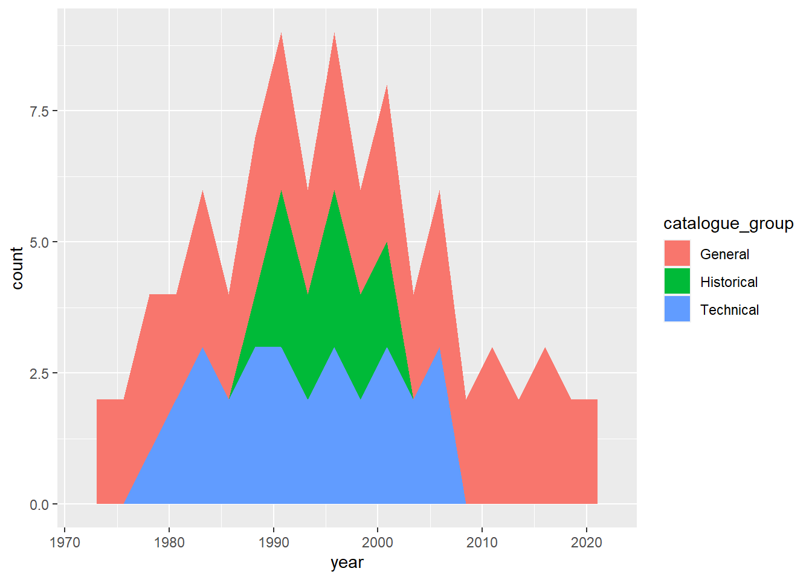

##Packages
library(tidytuesdayR)
library(dplyr)##
## Attaching package: 'dplyr'## The following objects are masked from 'package:stats':
##
## filter, lag## The following objects are masked from 'package:base':
##
## intersect, setdiff, setequal, unionlibrary(ggplot2)
library(here)## here() starts at C:/Users/Priyanka/Desktop/MADA_2021/Priyanka-gannavarapu-MADA-portfoliopapers <- readr::read_csv('https://raw.githubusercontent.com/rfordatascience/tidytuesday/master/data/2021/2021-09-28/papers.csv')## Rows: 29434 Columns: 4## -- Column specification --------------------------------------------------------
## Delimiter: ","
## chr (2): paper, title
## dbl (2): year, month##
## i Use `spec()` to retrieve the full column specification for this data.
## i Specify the column types or set `show_col_types = FALSE` to quiet this message.glimpse(papers)## Rows: 29,434
## Columns: 4
## $ paper <chr> "w0001", "w0002", "w0003", "w0004", "w0005", "w0006", "w0007", "~
## $ year <dbl> 1973, 1973, 1973, 1973, 1973, 1973, 1973, 1973, 1973, 1973, 1973~
## $ month <dbl> 6, 6, 6, 7, 7, 7, 8, 9, 9, 9, 9, 10, 10, 10, 10, 11, 11, 11, 12,~
## $ title <chr> "Education, Information, and Efficiency", "Hospital Utilization:~authors <- readr::read_csv('https://raw.githubusercontent.com/rfordatascience/tidytuesday/master/data/2021/2021-09-28/authors.csv')## Rows: 15437 Columns: 4## -- Column specification --------------------------------------------------------
## Delimiter: ","
## chr (4): author, name, user_nber, user_repec##
## i Use `spec()` to retrieve the full column specification for this data.
## i Specify the column types or set `show_col_types = FALSE` to quiet this message.glimpse(authors)## Rows: 15,437
## Columns: 4
## $ author <chr> "w0001.1", "w0002.1", "w0003.1", "w0004.1", "w0005.1", "w00~
## $ name <chr> "Finis Welch", "Barry R Chiswick", "Swarnjit S Arora", "Lee~
## $ user_nber <chr> "finis_welch", "barry_chiswick", "swarnjit_arora", NA, "jam~
## $ user_repec <chr> NA, "pch425", NA, "pli669", "psm28", NA, NA, NA, "pli259", ~programs <- readr::read_csv('https://raw.githubusercontent.com/rfordatascience/tidytuesday/master/data/2021/2021-09-28/programs.csv')## Rows: 21 Columns: 3## -- Column specification --------------------------------------------------------
## Delimiter: ","
## chr (3): program, program_desc, program_category##
## i Use `spec()` to retrieve the full column specification for this data.
## i Specify the column types or set `show_col_types = FALSE` to quiet this message.glimpse(programs)## Rows: 21
## Columns: 3
## $ program <chr> "AG", "AP", "CF", "CH", "DAE", "DEV", "ED", "EEE", "E~
## $ program_desc <chr> "Economics of Aging", "Asset Pricing", "Corporate Fin~
## $ program_category <chr> "Micro", "Finance", "Finance", "Micro", "Micro", "Mic~paper_authors <- readr::read_csv('https://raw.githubusercontent.com/rfordatascience/tidytuesday/master/data/2021/2021-09-28/paper_authors.csv')## Rows: 67090 Columns: 2## -- Column specification --------------------------------------------------------
## Delimiter: ","
## chr (2): paper, author##
## i Use `spec()` to retrieve the full column specification for this data.
## i Specify the column types or set `show_col_types = FALSE` to quiet this message.glimpse(paper_authors)## Rows: 67,090
## Columns: 2
## $ paper <chr> "w0001", "w0002", "w0003", "w0004", "w0005", "w0006", "w0007", ~
## $ author <chr> "w0001.1", "w0002.1", "w0003.1", "w0004.1", "w0005.1", "w0006.1~paper_programs <- readr::read_csv('https://raw.githubusercontent.com/rfordatascience/tidytuesday/master/data/2021/2021-09-28/paper_programs.csv')## Rows: 53996 Columns: 2## -- Column specification --------------------------------------------------------
## Delimiter: ","
## chr (2): paper, program##
## i Use `spec()` to retrieve the full column specification for this data.
## i Specify the column types or set `show_col_types = FALSE` to quiet this message.glimpse(paper_programs)## Rows: 53,996
## Columns: 2
## $ paper <chr> "w0074", "w0087", "w0087", "w0107", "w0116", "w0117", "w0129",~
## $ program <chr> "EFG", "IFM", "ITI", "PE", "PE", "LS", "HE", "IFM", "ITI", "HE~##Cleaning the data
joined_df <- dplyr::left_join(papers, paper_authors) %>%
dplyr::left_join(authors) %>%
dplyr::left_join(paper_programs) %>%
dplyr::left_join(programs) %>%
dplyr::mutate(
catalogue_group = stringr::str_sub(paper, 1, 1),
catalogue_group = dplyr::case_when(
catalogue_group == "h" ~ "Historical",
catalogue_group == "t" ~ "Technical",
catalogue_group == "w" ~ "General",
),
.after = paper
)## Joining, by = "paper"## Joining, by = "author"## Joining, by = "paper"## Joining, by = "program"joined_df## # A tibble: 130,081 x 12
## paper catalogue_group year month title author name user_nber user_repec
## <chr> <chr> <dbl> <dbl> <chr> <chr> <chr> <chr> <chr>
## 1 w0001 General 1973 6 Educatio~ w0001~ Fini~ finis_we~ <NA>
## 2 w0002 General 1973 6 Hospital~ w0002~ Barr~ barry_ch~ pch425
## 3 w0003 General 1973 6 Error Co~ w0003~ Swar~ swarnjit~ <NA>
## 4 w0004 General 1973 7 Human Ca~ w0004~ Lee ~ <NA> pli669
## 5 w0005 General 1973 7 A Life C~ w0005~ Jame~ james_sm~ psm28
## 6 w0006 General 1973 7 A Review~ w0006~ Vict~ victor_z~ <NA>
## 7 w0007 General 1973 8 The Defi~ w0007~ Lewi~ <NA> <NA>
## 8 w0008 General 1973 9 Multinat~ w0008~ Merl~ <NA> <NA>
## 9 w0008 General 1973 9 Multinat~ w0008~ Robe~ robert_l~ pli259
## 10 w0009 General 1973 9 From Age~ w0004~ Lee ~ <NA> pli669
## # ... with 130,071 more rows, and 3 more variables: program <chr>,
## # program_desc <chr>, program_category <chr>str(joined_df)## tibble [130,081 x 12] (S3: tbl_df/tbl/data.frame)
## $ paper : chr [1:130081] "w0001" "w0002" "w0003" "w0004" ...
## $ catalogue_group : chr [1:130081] "General" "General" "General" "General" ...
## $ year : num [1:130081] 1973 1973 1973 1973 1973 ...
## $ month : num [1:130081] 6 6 6 7 7 7 8 9 9 9 ...
## $ title : chr [1:130081] "Education, Information, and Efficiency" "Hospital Utilization: An Analysis of SMSA Differences in Hospital Admission Rates, Occupancy Rates and Bed Rates" "Error Components Regression Models and Their Applications" "Human Capital Life Cycle of Earnings Models: A Specific Solution and Estimation" ...
## $ author : chr [1:130081] "w0001.1" "w0002.1" "w0003.1" "w0004.1" ...
## $ name : chr [1:130081] "Finis Welch" "Barry R Chiswick" "Swarnjit S Arora" "Lee A Lillard" ...
## $ user_nber : chr [1:130081] "finis_welch" "barry_chiswick" "swarnjit_arora" NA ...
## $ user_repec : chr [1:130081] NA "pch425" NA "pli669" ...
## $ program : chr [1:130081] NA NA NA NA ...
## $ program_desc : chr [1:130081] NA NA NA NA ...
## $ program_category: chr [1:130081] NA NA NA NA ...#Displaying data
glimpse(joined_df)## Rows: 130,081
## Columns: 12
## $ paper <chr> "w0001", "w0002", "w0003", "w0004", "w0005", "w0006",~
## $ catalogue_group <chr> "General", "General", "General", "General", "General"~
## $ year <dbl> 1973, 1973, 1973, 1973, 1973, 1973, 1973, 1973, 1973,~
## $ month <dbl> 6, 6, 6, 7, 7, 7, 8, 9, 9, 9, 9, 9, 10, 10, 10, 10, 1~
## $ title <chr> "Education, Information, and Efficiency", "Hospital U~
## $ author <chr> "w0001.1", "w0002.1", "w0003.1", "w0004.1", "w0005.1"~
## $ name <chr> "Finis Welch", "Barry R Chiswick", "Swarnjit S Arora"~
## $ user_nber <chr> "finis_welch", "barry_chiswick", "swarnjit_arora", NA~
## $ user_repec <chr> NA, "pch425", NA, "pli669", "psm28", NA, NA, NA, "pli~
## $ program <chr> NA, NA, NA, NA, NA, NA, NA, NA, NA, NA, NA, NA, NA, N~
## $ program_desc <chr> NA, NA, NA, NA, NA, NA, NA, NA, NA, NA, NA, NA, NA, N~
## $ program_category <chr> NA, NA, NA, NA, NA, NA, NA, NA, NA, NA, NA, NA, NA, N~#DATA in 1989
data_1989 <- joined_df %>% filter(year ==1989)glimpse(data_1989)## Rows: 1,042
## Columns: 12
## $ paper <chr> "w2797", "w2797", "w2797", "w2797", "w2797", "w2797",~
## $ catalogue_group <chr> "General", "General", "General", "General", "General"~
## $ year <dbl> 1989, 1989, 1989, 1989, 1989, 1989, 1989, 1989, 1989,~
## $ month <dbl> 2, 2, 2, 2, 2, 2, 2, 2, 1, 1, 1, 1, 1, 1, 1, 1, 1, 1,~
## $ title <chr> "The Dynamics of an Aging Population: The Case of Fou~
## $ author <chr> "w0253.1", "w0253.1", "w0362.2", "w0362.2", "w2797.2"~
## $ name <chr> "Alan J Auerbach", "Alan J Auerbach", "Laurence J Kot~
## $ user_nber <chr> "alan_auerbach", "alan_auerbach", "laurence_kotlikoff~
## $ user_repec <chr> "pau33", "pau33", "pko44", "pko44", "pni5", "pni5", N~
## $ program <chr> "AG", "PE", "AG", "PE", "AG", "PE", "AG", "PE", "AG",~
## $ program_desc <chr> "Economics of Aging", "Public Economics", "Economics ~
## $ program_category <chr> "Micro", "Micro", "Micro", "Micro", "Micro", "Micro",~#Program category in 1989
program_1989 = data_1989 %>% group_by(program_category) %>%summarise(Count = n()) %>% arrange(desc(Count))glimpse(program_1989)## Rows: 3
## Columns: 2
## $ program_category <chr> "Macro/International", "Micro", NA
## $ Count <int> 717, 324, 1ggplot(data=program_1989, aes(x=Count, y=program_category)) +geom_bar(stat="identity") + coord_flip()catalogue_data <- joined_df %>%
subset( select = c(paper, year, catalogue_group)) %>%
group_by(paper) %>% distinct()glimpse(catalogue_data)## Rows: 29,434
## Columns: 3
## Groups: paper [29,434]
## $ paper <chr> "w0001", "w0002", "w0003", "w0004", "w0005", "w0006", ~
## $ year <dbl> 1973, 1973, 1973, 1973, 1973, 1973, 1973, 1973, 1973, ~
## $ catalogue_group <chr> "General", "General", "General", "General", "General",~#Plotting catalogue group over time
cata_group <- catalogue_data %>% group_by(year) %>%
count( catalogue_group, sort = TRUE) %>% arrange(year)glimpse(cata_group)## Rows: 91
## Columns: 3
## Groups: year [49]
## $ year <dbl> 1973, 1974, 1975, 1976, 1977, 1978, 1979, 1979, 1980, ~
## $ catalogue_group <chr> "General", "General", "General", "General", "General",~
## $ n <int> 25, 45, 47, 38, 59, 68, 113, 1, 211, 5, 223, 9, 222, 6~cata_group %>% ggplot(aes(x = year, fill = catalogue_group )) +
geom_area(stat="bin", bins = 20)